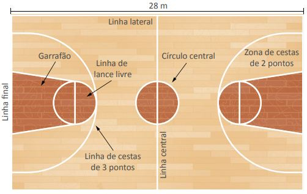

Regras e fundamentos
O basquete é um esporte coletivo. São duas equipes de cada lado,
com cinco jogadores por time e mais cinco em cada banco de reservas,
que ocupam as seguintes posições:
- Armador/Base, quem começa com a bola e planeja as jogadas.
- Ala/Armador, vai de apoio à base até a cesta.
- Pivô/Poste, tem papel fundamental na defesa assim como é o responsável por finalizar as jogadas e fazer as cestas.
Três árbitros supervisionam a partida. Um deles joga a bola para cima no centro da quadra,
que pode ser fechada ou a céu aberto, dando início ao jogo.
As partidas de basquete tem a duração de 40 minutos, em quatro tempos de 10 minutos.
Na NBA são quatro tempos de 12 minutos, totalizando 48 minutos de partida.
Só se pode na bola com as mãos. E não se pode dar mais de dois passos segurando-a, e sim sempre quicando no chão.
A pontuação é marcada a partir das cestas no campo adversário. Lance livre vale 1 ponto, cesta no campo são 2 pontos,
e antes da linha dos três pontos, 3 pontos.
Existem regras específicas que regulamentam o controle da bola e as marcações, passíveis de falta:
- Regra dos 3 segundos: No área restrita do time adversário, o jogador só tem 3 segundos na área com a posse de bola.
- Regra dos 5 segundos: Enquanto é marcado, o jogador tem 5 segundos ou menos de posse de bola.
- Regra dos 8 segundos: Quem ganha a posse de bola no campo de defesa tem 8 segundos para levar a bola até o campo adversário, seja por si ou passando para outro membro da equipe.
- Regra dos 24 segundos: A equipe com a bola na mão tem 24 segundos para fazer e finalizar a jogada.Regra dos 24 segundos: A equipe com a bola na mão tem 24 segundos para fazer e finalizar a jogada.

Basquete no Brasil | Curiosidades
O basquete chegou no Brasil ainda no século XIX, pelas mãos de Augusto Shaw,
um norte-americano que veio ao país dar aulas no Colégio Mackenzie, em São Paulo.
A disseminação do esporte pelo Brasil também teve a participação da mesma entidade em que surgiu
o basquete nos Estados Unidos, a ACM. Em 1912 foram realizados os primeiros torneios,
e em 1916 a Liga Metropolitana dos Sports Athléticos reconheceu o basquete enquanto esporte,
criando o primeiro campeonato oficial em 1919. Deste campeonato, saiu vencedora a equipe do Flamengo.
Entre os principais nomes do basquete no Brasil, temos Oscar Schmidt,
Hortência, Paula e Janete. Todos atletas olímpicos e de destaque nas ligas nacionais.